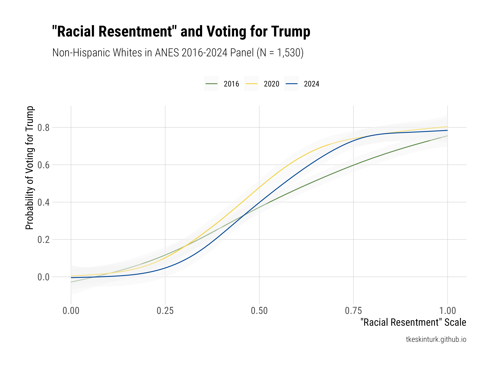
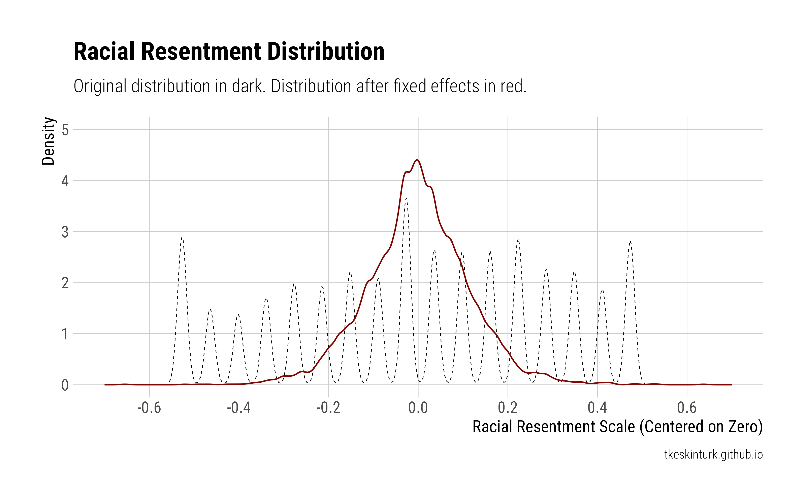
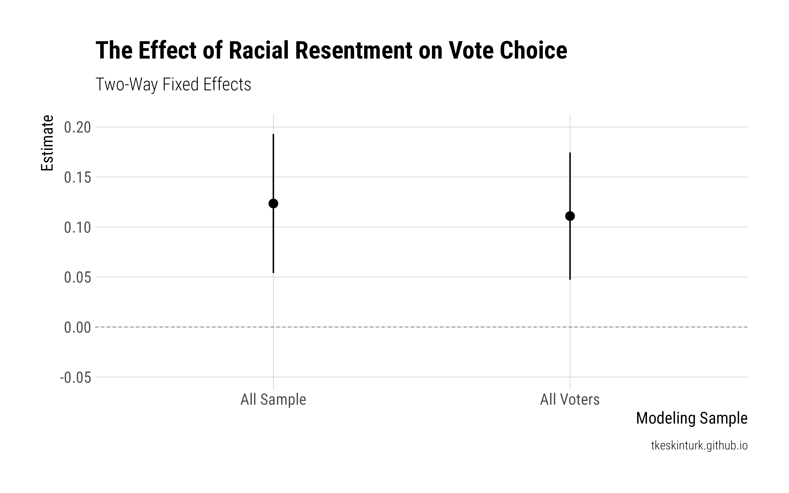

Racial Resentment and Voting for Trump from 2016 to 2024
One popular theory of polarization in the U.S. states that “racial resentment” is the underlying attitudinal mechanism that generates differential voting. A popular measure of this construct comes from Kinder and Sanders (1996), who defines it as
the conjunction of whites’ feelings towards blacks and their support for American values, especially secularized versions of the Protestant ethic.
This measure has a highly contested history, with critiques—I think plausibly—suggesting that the underlying survey construct measures a mix of things, including overt racism, conservative values, and free market individualism (Feldman and Huddy 2005). In that sense, it is not really clear whether this measure captures racist attitudes and picks up conservatism more broadly.
Let’s bracket this issue for now (why not?), because the American National Election Studies just published their 2024 data which allows us to append its panel component to previous waves in 2016 and 2020. This gives us an 8-year overview of the tumultuous “Donald Trump Era,” and we can follow the same set of people from Trump’s first nomination in 2016 until his final victory in 2024. With usual caveats of panel attrition and stable composition, we can look at the relationship between racial resentment and Trump vote in each wave, as well as testing whether increasing levels of racial resentment predict higher vote for Trump, controlling for all time invariant characteristics.
The data and code to reproduce everything below are stored here. I look at non-Hispanic Whites in the ANES, which includes 1,530 individuals observed across 3 waves.
The Cross-Sectional Associations
Let’s first look at the relationship between racial resentment and Trump vote.1
1 The “Trump vote” takes 1 if a person voted for Trump and 0 otherwise. When non-voters are dropped, the same substantive results hold. Since I can only use the preliminary ANES release at the time of writing this post, the estimates are not weighted.
Figure 1 below shows a striking predictive power of racial resentment and Trump vote. It seems that this relationship slightly tightened from 2016 to 2024, though this change is marginal.
To give you a sense of the magnitude, the racial resentment scale explains 37% of the variation in 2016, and 49% and 46% of it in 2020 and 2024, respectively.
 |
|---|
| Figure 1 |
This much is known from earlier studies (Hooghe and Dassonneville 2018), but of course, the power of a panel design comes from the fact that we can look at change variation over time.
The Panel Context
We can now ask the following question: do changes in racial resentment predict changes in Trump vote, adjusting for time-invariant individual characteristics and time trends?
This comes with some caveats, particularly on the interpretation side (Mummolo and Peterson 2018).
Figure 2 shows that, after individual “dispositions” (i.e., mean responses across three waves) are partialled out, the variation shrinks considerably (~60%), and there are not much big jumps going on within individuals. That’s to be expected. But we should keep this in the back of our mind so that, when we evaluate the “effects,” we can think about them in the context of plausible counterfactuals, meaning that these effects rely on rather small deviations over time.
 |
|---|
| Figure 2 |
Figure 3 gives you the final product of this exercise: two TWFE estimates, the former estimated on all sample (including non-voters) while the latter estimated on the voter subset.
 |
|---|
| Figure 3 |
These are strong effect sizes!2
2 Remember the change distribution, though!
A lot has to be said (and being said) about what racial resentment susbtantively means, or what it hides. But we should admit that this is sure as hell predictive.